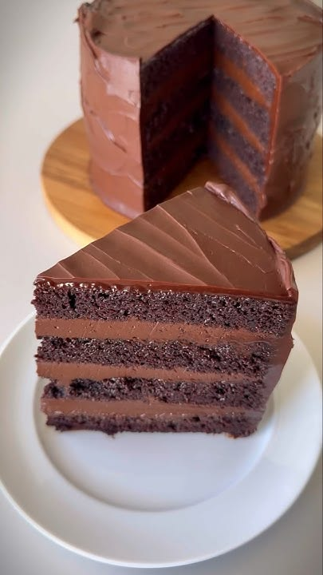
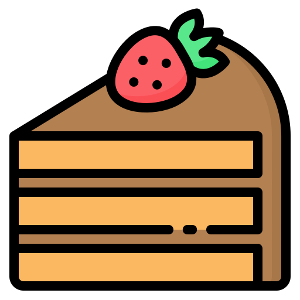
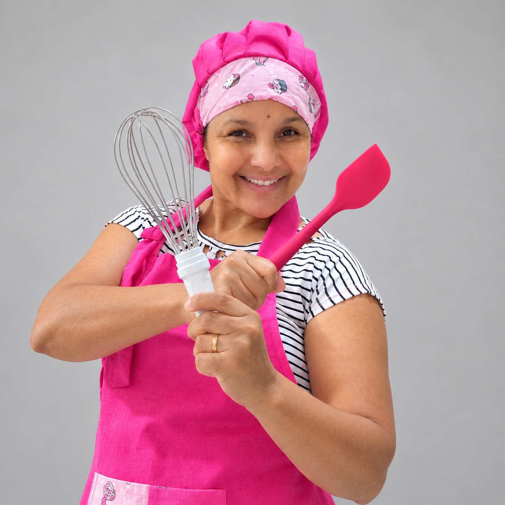
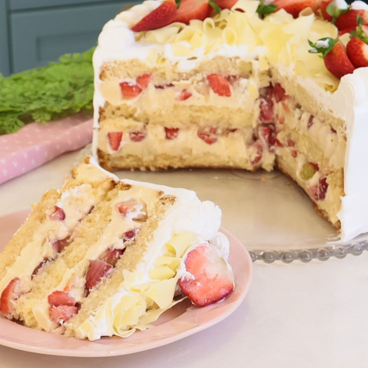
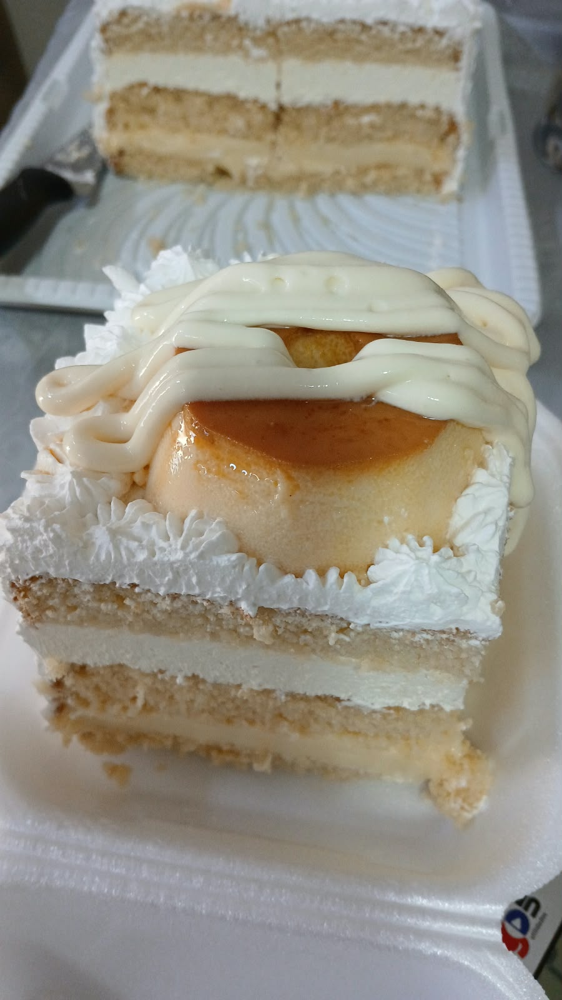
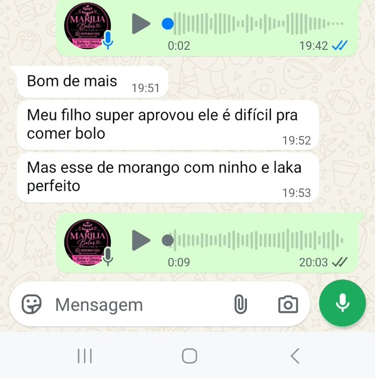
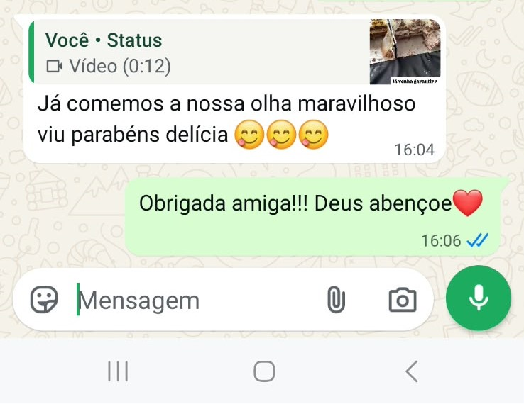
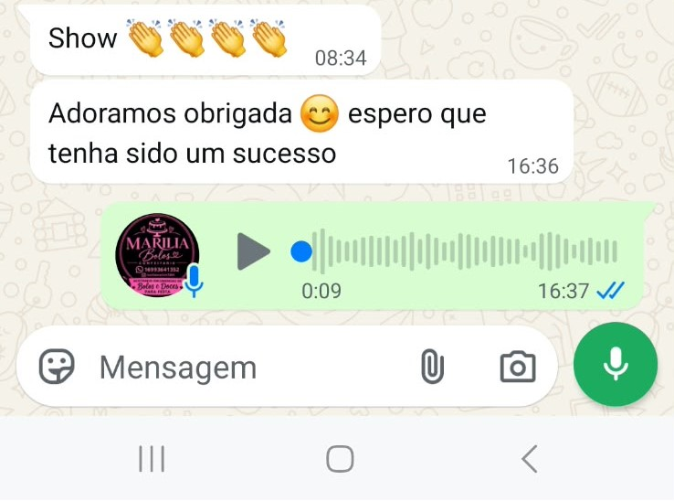
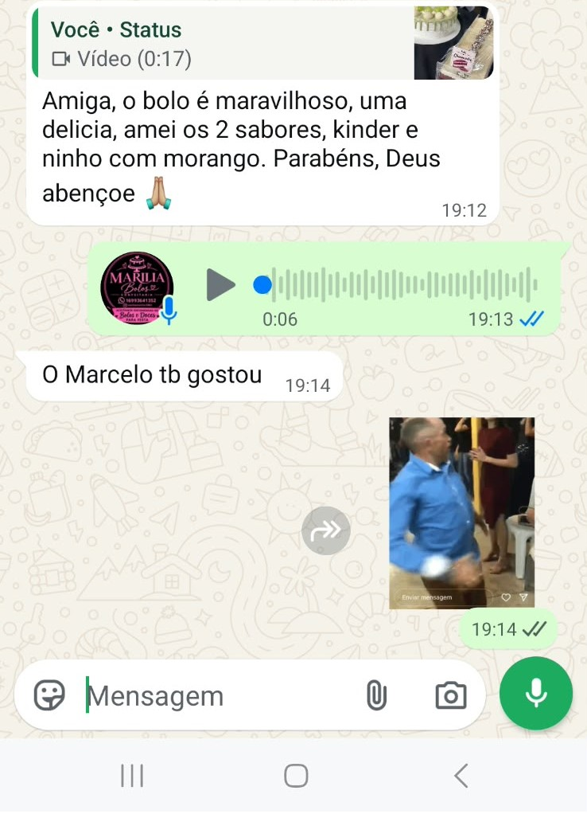

Bolo Matilda
Massa fofinha de chocolate intenso com recheio e cobertura ultra cremosos. O verdadeiro sonho de qualquer amante de chocolate!

Marília Bolos Conheça o festivalSabores que encantam, receitas feitas com carinho e momentos que ficam na memória. Venha conhecer nosso mundo de delícias!

Descubra sabores preparados para adoçar o seu dia.

Massa fofinha de chocolate intenso com recheio e cobertura ultra cremosos. O verdadeiro sonho de qualquer amante de chocolate!

Creme aveludado de Leite Ninho combinado com morangos frescos e selecionados. Uma opção leve, equilibrada e irresistível.

A união perfeita entre a massa molhadinha de bolo e a doçura cremosa do pudim artesanal. O melhor de dois mundos numa só fatia!
Um encontro cheio de sabor, carinho e muitas delícias. Venha participar desse momento especial com a gente!
10 de outubro de 2026
A partir das 15h
Avenida São Vicente, 3028
Bairro Santa Rita — Franca/SP
Relembramos a primeira edição e os feedbacks que marcaram esse começo.
Foi um momento especial para reunir pessoas, celebrar os bolos feitos com carinho e perceber o quanto a nossa comunidade ama essa festa doce.




Em breve uma nova edição do festival será realizada, trazendo ainda mais sabores, experiências e momentos doces para todos os participantes.
Em breve uma nova edição do festival será realizada, trazendo ainda mais sabores, experiências e momentos doces para todos os participantes.
Venha conhecer os bolos da Marília e compartilhar esse momento especial com a gente.